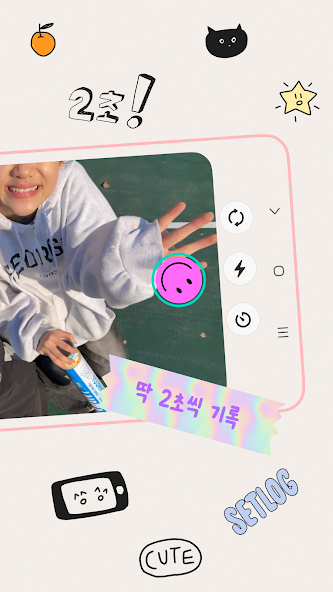
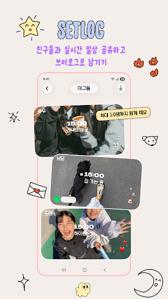

setlog 装了一年半：从"每小时拍2秒"到"它成了我和女朋友唯一没断过的东西"
从好奇下载到每天习惯性点开，setlog 这一年半给我留的远不止分屏 Vlog——说说那些当初没料到的变化和它没做好的地方。
装它的契机很简单
去年春节回老家，刷小红书刷到一个帖子：一对异地情侣用 setlog官网 每小时互拍 2 秒，晚上自动合成分屏 Vlog。帖子里放了 30 天的分屏截图，左边是女生在上海的出租屋加班，右边是男生在成都吃火锅，同一时刻不同画面并排，比任何一条视频通话都让人觉得"我们还在一起"。
那时候我跟女朋友刚异地满三个月，微信视频从每天三次降到隔天一聊，两个人都忙但又不想把关系变成纯文字消息的样子。看完帖子五分钟内就从官方下载拿了安装包，拉了个 2 人 Log，定了三个必拍时段：早上 8 点、中午 12 点、晚上 10 点。
就这么开始了，没多想。
越用越顺手的地方：肌肉记忆是怎么形成的
第一个月其实挺费劲的。每小时弹出通知，拿起手机对着自己或者眼前的东西拍 2 秒，拍完还要确认上传成功——我那时候还没养成"拍了就传"的习惯，有几次攒了三四个时段一起传，结果 Wi-Fi 突然断了，半天白拍。setlog 在上传失败这件事上一点都不含糊，没传上去的片段直接不进自动 Vlog，相当于没拍。
后来慢慢养成了：通知一响 → 掏手机 → 2 秒 → 确认转圈结束 → 锁屏走人。整个流程不超过 10 秒。现在有时候手机调了静音没听到通知，过半小时想起这事还会补拍一张——已经不是"任务"了，更像一种条件反射。
自动存档这个功能我一开始没在意，以为就是帮我省个手动导出的事。直到上个月换手机，新手机登录账号之后发现过去一年的所有 Vlog 都在 Logs 页的历史记录里，一条没丢。那一刻才反应过来，这个默认开启的功能其实是 setlog 最实在的兜底——我中间卸载重装过两次，清理缓存清了三四次，要是没自动存档，那些记录早就没了。

越用越烦的地方：当初没料到的毛病
说个反直觉的——setlog 没做的事比它做了的事更让我纠结。
它没有内置分享按钮。我知道这是刻意设计，保持熟人圈子的定位不让内容外流，但实际体验下来就是：想把某段 Vlog 发朋友圈给朋友看，得先在 setlog 里导出到相册 → 打开剪映 → 加 BGM（setlog 原生只有环境声，没配乐）→ 加字幕（不然别人看不出每个时段在干嘛）→ 调色（原生画面偏暗偏色，尤其是室内）→ 调竖屏（小红书抖音都是 9:16，setlog 是横屏分屏）→ 最后才到目标 App 发布。一条 Vlog 从 setlog 到发出去，中间至少要开四个 App。
还有上传失败这事，到现在还是没根治。我女朋友租的房子 Wi-Fi 信号差，有时候整栋楼断网，她那个时段就传不上去，我这边看分屏就只剩我一个人。setlog 的服务器主要在海外，移动数据弱信号的时候也容易卡。按她的说法，这半年至少有二十多个时段因为网络原因没传上去，Vlog 里就是一道空白。setlog 容忍缺失这点我理解，但看着分屏里自己那半边孤零零的，还是会有点失落。
离不开的功能（和再也没碰过的）
Zip 秒回是现在每天必用的。看到女朋友 12 点拍了一碗面，我对着自己的外卖盒拍一段配文字"我也想那碗面"，或者对着空桌面拍个鬼脸。比起在微信里发"好饿"，Zip 的温度完全不一样——它有画面，有此刻，不是文字能替代的。
反过来，Log 群组的多人功能我一次没碰过。setlog 支持多人分屏，理论上可以拉三四个朋友一起记录，但我和女朋友的二人世界用不上，也没兴趣跟朋友搞这种"每小时拍一张"的局。后来去setlog文档翻了一下，文档里说的"多人 Log 团建"场景，对我来说太闹了。

观感修正：当初高估了什么，低估了什么
刚装的时候以为分屏 Vlog 是核心卖点——毕竟帖子里最抓眼球的就是左右并排的画面。但用了一年半回头看，分屏 Vlog 其实是 setlog 最不重要的产出。真正留住我们的是那个"每小时拍 2 秒"的仪式感，是 Zip 秒回的即时性，是打开 Logs 页往下滑就能看到"哦那天她在加班到很晚""那天我在超市偶遇了前女友"的细碎日常。
Vlog 本身反而很少主动翻。大概一个月回看一次，每周日晚上一起看的那种"约会"，只在前三个月做过，后来两个人忙起来就没了。但那不是 setlog 的问题——是生活节奏变了。setlog 没因为我们没看 Vlog 就停止记录，它安安静静地在后台跑着，通知响就拍，拍完就传，存好存满。
当初也低估了"真实"这件事的重量。setlog 不做任何美化，不做任何调色，画面偏暗就偏暗，手抖就手抖，表情傻就傻。刚开始导出到剪映总想着调亮一点、磨个皮，后来干脆不调了——就这样发出去。反而是这种没修过的画面，回看的时候更有"那就是当时的我"的感觉。
去留结论：不会卸载，但有个信号出现就该换
短期不会卸。原因很简单——我和女朋友的 Log 已经累积了 400 多天的记录，这些东西跟着账号走，换别的 App 带不走。而且肌肉记忆已经形成了，通知响掏手机这个动作，现在不做反而觉得少了点什么。
但有个场景我已经开始考虑替代方案了：如果哪天我们其中一个人开始觉得"每小时拍一张是负担"，那这个 Log 就该停了。setlog 的设计哲学是"轻盈"，2 秒、无压力、不惩罚漏拍——但再轻盈的事，连续做 400 多天也会从"习惯"变成"惯性"。文档里说"某天累了或忙了就漏拍几个时段，setlog 不惩罚"，这话没错，但连续漏拍一周，打开 Logs 页看到对面半边都是空白，那种落差感比 setlog 本身还让人不舒服。
到那个时候，可能就该停了。不是卸载，是把 Log 归档，导出最后的 Vlog 存进云盘，然后去找更适合那个阶段的东西。setlog 很好，但它只适合"还想记录"的阶段。
现在还没到那个阶段。
三个仓库都能拿到的完整资料
setlog 的整套文档和资源在三个仓库都能拿到——GitHub 是主力维护地，Gitee 适合国内访问速度慢的时候用，GitCode 做了一份定期备份。三个仓库的目录结构完全一致，分类和命名也保持同步，查资料的时候哪个方便就用哪个。